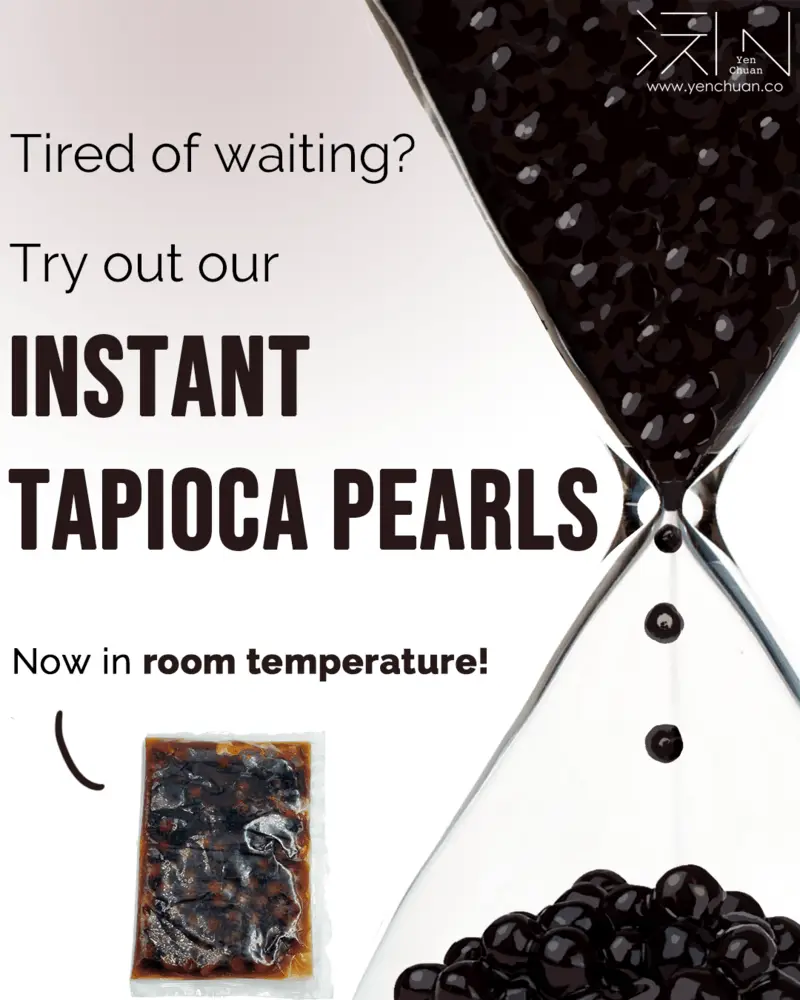

Articles / Tips & trends
INSTANT TAPIOCA PEARLS!
2020-06-20 · New products, News

Original public content from Yen Chuan. Product claims and specifications remain subject to confirmation by the company.
Tapioca pearls are a staple of bubble tea, and many people fall in love with bubble tea thanks to the pearls’ chewy goodness.
This chewy goodness doesn’t come easy though.
To cook a batch of pearls from dried tapioca pearls takes time – 30 minutes of cooking in boiling water, then another 30 minutes of off-heat stewing.
Of course there’s tapioca cookers to help handle the cooking, but there’s no escaping the time and effort needed to cook up the perfect tapioca….
…..until now.
Introducing our instant tapioca pearls, where preparation takes literally minutes!
Heat up the pearls in the microwave and you’re done!
Now available in room temperature or frozen forms!